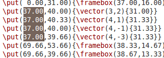
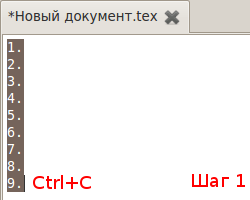
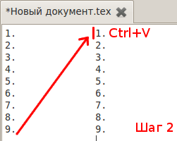
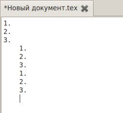

[Назад: 2.2. Поиск]
[Далее: 2.4. Консоль и компиляция]
Режим блоков
В режиме блоков текст выделяется не подряд, а в виде прямоугольных блоков:

Этот режим удобен в том случае, если требуется полностью скопировать столбец таблицы (например, номера строк) и
вставить в другое место документа. Выполнение этой операции вручную может занять достаточно много времени и привести
к ошибкам (можно, например, перепутать числа), в то время как в режиме боков это выполняется в три действия: выделить
нужный блок, копировать его и вставить:


После вставки блока курсор всегда перемещается на одну строчку ниже (то есть как-бы под вставленный текст). Таким
образом при вставке несколько раз подряд блоки будут расположены один под другим:

Чтобы переключаться между классическим режимом и режимом блоков, можно использовать сочетание клавиш Ctrl+B,
либо нажимать соответствующую кнопку на панели инструментов (слева - вид кнопки в классическом режиме, справа - в
режиме блоков):


Также можно воспользоваться соответствующим пунктом меню Документ. Когда редактор находится в классическом
режиме, этот пункт отображается как Режим: строки, а когда в режиме блоков - то его название меняется на
Режим: блоки.
Текст, скопированный в режиме блоков, при переключении в классический режим будет вставлен как обычный текст. Текст,
состоящий из строк разной длины (то есть не являющийся прямоугольным блоком) в режиме блоков вставлен не будет.
[Назад: 2.2. Поиск]
[Далее: 2.4. Консоль и компиляция]